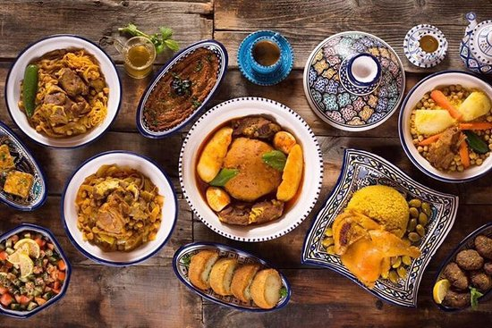

While gourmee meals look great on TV, creating really good food is becoming an incredibly harder task to accoplishe for the busy professional. Why not check out these simple recipees that only take a few minutes to prepare but are guaranteed to make your stomach growl! I encourage you to review the following recipees below.

| Product | Price |
|---|---|
| Plate | $19 |
| Fork | $4 |